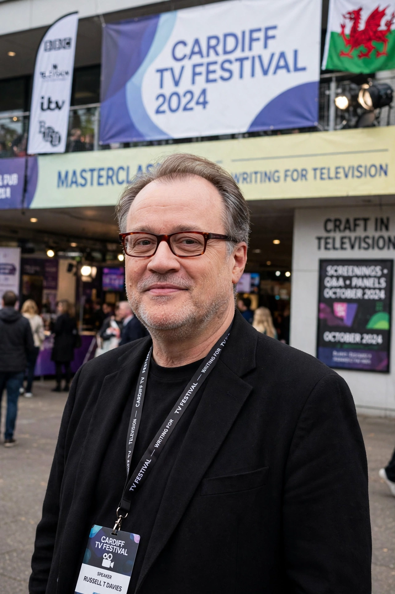

Russell T Davies
| Russell T Davies | |
|---|---|
| Born | 27 April 1963, Swansea, Wales |
| Occupation | Television producer, screenwriter |
| Known for | Doctor Who (revival), Queer as Folk, It's a Sin |
Stephen Russell Davies (born 27 April 1963), better known as Russell T Davies, is a Welsh television producer and screenwriter. He is best known as the showrunner who revived Doctor Who in 2005, returning the programme to mainstream success after a sixteen-year absence from regular television.

Career
Davies began in children's television (Why Don't You...?, Children's Ward) before moving into adult drama. His 1999 series Queer as Folk (originally Channel 4, UK) was a landmark in gay television drama, remade in North America. Other credits include The Second Coming (2003), Casanova (2005), Torchwood and The Sarah Jane Adventures (spin-offs of the Doctor Who revival), Cucumber/Banana/Tofu (2015), A Very English Scandal (2018) and It's a Sin (2021).
Doctor Who
As showrunner from 2005 to 2010 — and again from the 60th anniversary in 2023 — Davies reimagined the TARDIS and the Doctor for a new audience, casting Christopher Eccleston and then David Tennant. He established the modern series' emotional, character-driven tone, introduced Rose Tyler, and oversaw storylines such as the Time War. He has received multiple BAFTA and RTS awards and was appointed OBE in 2008.